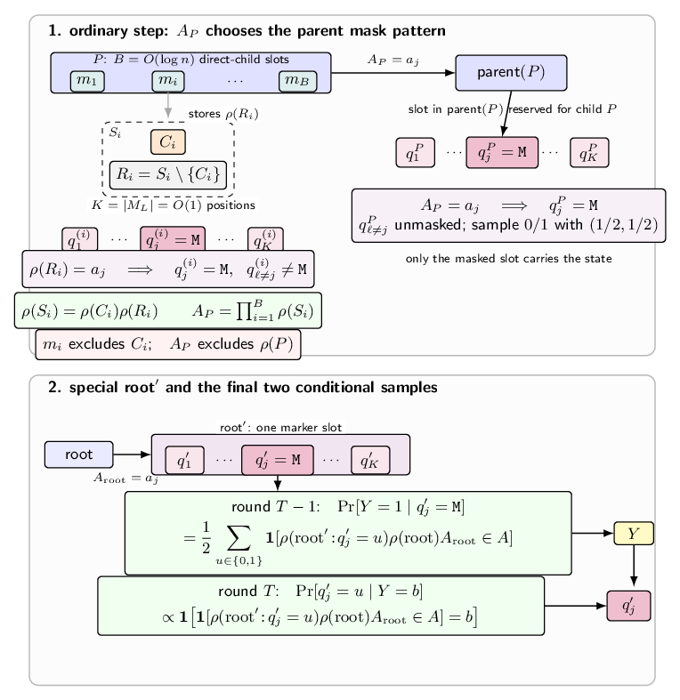

Exact sampling round complexity for diffusion language models
This note records a few exact-sampling examples for diffusion language models and tracks how the required number of rounds changes when revision is allowed. Here, remasking is included as a form of revision, since we view updates such as \(0\to M\) as revisions. I first define the two update models, and then separate the computational regimes used in the examples.
Throughout the note, a round means one parallel DLM update. The predictor is denoted by \(p(\cdot \mid x)\). Target distributions are denoted by \(\mathcal{T}\).
Model conventions
We use the binary vocabulary
\[ V=\{0,1\}, \]
together with a mask symbol \(M\). The state space is \((V\cup\{M\})^L\). In this note we consider unconditional generation, so the initial state is
\[ x^{(0)}=M^L. \]
The standard, no-revision DLM follows the usual masked-decoding rule from Jiang, Haghtalab, and Chen [1]: an unmasking policy \(F\) first chooses which currently masked positions to decode, and only those positions are sampled. Once a position is unmasked, it cannot change.
No-revision DLM
Input: length L, rounds D, predictor p, unmasking policy F
Initialize x <- M^L
for t = 1,...,D:
S <- F(x) // S must be a subset of {i : x_i = M}
for each i in S independently:
x_i ~ p_i(. | x) over {0,1}
all positions outside S stay unchanged
Output xWith revision, I use the simpler abstraction that there is no separate unmasking policy. Every position is updated in every round, and each coordinate may freely take values in \(\{0,1,M\}\). This includes remasking, since a transition such as \(0\to M\) is allowed.
DLM with revision
Input: length L, rounds D, predictor p
Initialize x <- M^L
for t = 1,...,D:
for each i in [L] independently:
x_i ~ p_i(. | x) over {0,1,M}
Output x // for exact sampling over {0,1}^L, x has no MFor a target distribution over \(\{0,1\}^L\), a valid exact sampler must output a fully unmasked string with probability \(1\).
The update model is independent of the computational regime. In the general regime, the update rules may use arbitrary computation and arbitrary real probabilities. In the \(AC^0\) regime, the relevant predictors and, for the no-revision model, the unmasking policy \(F\), are implemented by polynomial-size constant-depth circuits.
General predictors
In this section, the predictor has unrestricted computational power. The point is only to understand the information flow caused by masking, unmasking, and revision.
The one-hot distribution without revision
This is a small example showing how no-revision unmasking alone can force many rounds even when the target distribution is simple.
Let
\[ U_n = \mathrm{Unif}\{e_0,e_1,\ldots,e_{n-1}\}, \]
where \(e_i \in \{0,1\}^n\) is the string with a single \(1\) at position \(i\) and \(0\) everywhere else.
The obstruction is independence inside one DLM round. Consider a history in which all positions written so far are \(0\), and suppose that two still-masked positions both have positive conditional probability of eventually being the unique \(1\). If the DLM writes both positions in the same round, then the two written values are sampled independently. Therefore there is positive probability that both positions become \(1\), which is outside the support of \(U_n\).
Thus a no-revision sampler can resolve at most one remaining candidate for the unique \(1\) in each round. Starting from \(n\) possible locations, exact sampling from \(U_n\) therefore needs \(n\) rounds.
Three-round tightness with revision
Theorem 1 (three-round tightness with revision). In the unrestricted predictor regime, any target distribution over \(\{0,1\}^n\) can be sampled in at most three rounds when revision is allowed. For all sufficiently large \(n\), this is tight: some target distributions cannot be sampled exactly in two rounds.
The key is the classical alias-method view of discrete sampling [2]. For any distribution \(\alpha=(\alpha_0,\ldots,\alpha_{L-1})\) over \([L]=\{0,1,\ldots,L-1\}\), there is an alias table with keep probabilities \(\tau_0,\ldots,\tau_{L-1}\in[0,1]\) and aliases \(q_0,\ldots,q_{L-1}\in[L]\) such that the following experiment outputs \(Y\sim\alpha\):
- sample \(X\sim \mathrm{Unif}([L])\);
- conditioned on \(X=i\), sample
\[ \Pr[Y=y\mid X=i] = \tau_i \mathbf{1}[y=i] + (1-\tau_i)\mathbf{1}[y=q_i]. \]
Equivalently, one first chooses a uniform bucket and then uses one biased coin to decide whether to keep the bucket index or jump to its alias.
Now let \(\mathcal{T}\) be an arbitrary target distribution over \(\{0,1\}^n\). For a prefix \(a\in\{0,1\}^{n-1}\), define its target marginal
\[ \mu(a)=\sum_{z\in\{0,1\}}\mathcal{T}(a,z). \]
Apply the alias method to \(\mu\), with \(L=2^{n-1}\). This gives a keep probability \(\tau_a\) and an alias prefix \(q_a\) for every prefix \(a\).
The three-round sampler is:
Round 1. Sample the first \(n-1\) positions uniformly and independently. Call the resulting prefix \(A\). Leave the last position masked.
Round 2. Use the last position as a temporary marker. Conditioned on the current prefix \(A=a\), set this marker to \(0\) with probability \(\tau_a\) and to \(1\) with probability \(1-\tau_a\).
Round 3. If the marker is \(0\), keep the prefix \(B=A\). If the marker is \(1\), revise the prefix to \(B=q_A\). Then revise the last position from a marker into the real final token by sampling
\[ Z \sim \mathcal{T}(x_{n-1}=\cdot \mid x_{<n-1}=B). \]
By the alias table, the prefix \(B\) has marginal distribution \(\mu\). The final token \(Z\) is then sampled from the correct conditional distribution under \(\mathcal{T}\). Therefore the final output \((B,Z)\) is exactly distributed as \(\mathcal{T}\).
It remains to show that two rounds do not always suffice. We prove this by a dimension argument.
For each distribution \(\mu\) over the state index set \(\mathcal{Y}=\{0,1\}^{n-1}\), define a distribution \(\mathcal{P}_\mu\) over \(\{0,1\}^n\) by
\[ \mathcal{P}_\mu(x) = \mu(x_{<n-1}) \mathbf{1}\left[ x_{n-1} = \bigoplus_{i<n-1} x_i \right]. \]
Thus \(\mathcal{P}_\mu\) is supported on the graph of the parity function, and the free parameter is the distribution \(\mu\) over the \(2^{n-1}\) graph states.
Now consider any two-round sampler with revision. To make the lower bound only stronger, allow the first round to sample each position independently from \(\{0,1,M\}\). Hence the first-round state \(S\) lies in \(\{0,1,M\}^n\), and its product distribution is described by \(3n\) probability parameters, with one normalization constraint per position.
Conditioned on a first-round state \(S=s\), the second round again samples the final positions independently. If the output distribution is exactly \(\mathcal{P}_\mu\), then every such conditional product distribution must be supported on the parity graph. But a product distribution supported on a parity graph is a point mass: if any coordinate has both values with positive probability, flipping that coordinate leaves the parity graph. Therefore the second round is deterministic on every first-round state with positive probability.
So a two-round sampler induces a deterministic map
\[ g:\{0,1,M\}^n \to \{0,1\}^{n-1}, \]
where \(g(s)\) is the state index \(y\in\mathcal{Y}\) of the final parity-graph output. There are at most
\[ \left(2^{n-1}\right)^{3^n} \]
possible maps \(g\).
Fix such a map \(g\). Let \(\theta_i=(\theta_{i,0},\theta_{i,1},\theta_{i,M})\) be the first-round distribution at position \(i\), and let \(\theta=(\theta_i)_{i=0}^{n-1}\). This gives a product distribution over \(S\in\{0,1,M\}^n\):
\[ \Pr_\theta[S=s] = \prod_{i=0}^{n-1}\theta_{i,s_i}. \]
To view the output distribution as a point in Euclidean space, choose one reference state \(y_\star\in\mathcal{Y}\) and keep only the other \(2^{n-1}-1\) state coordinates:
\[ A=\mathcal{Y}\setminus\{y_\star\}. \]
These coordinates give the coordinate image of the simplex of all distributions over \(\mathcal{Y}\):
\[ \Delta_A \cong \Delta_{2^{n-1}-1} \subset \mathbb{R}^{2^{n-1}-1}. \]
The set \(\Delta_A\) has dimension \(2^{n-1}-1\) and therefore has a natural Lebesgue volume, denoted by \(\operatorname{Vol}\).
Define
\[ \Phi_g(\theta) = \left( \Pr_\theta[g(S)=y] \right)_{y\in A} \in \mathbb{R}^{2^{n-1}-1}. \]
The omitted coordinate at \(y_\star\) is determined by normalization. The map \(\Phi_g\) is polynomial in these \(3n\) probability parameters, equivalently in a parameter space with at most \(2n\) degrees of freedom.
For \(n\ge 6\), even the conservative bound \(3n < 2^{n-1}-1\) holds. Hence
\[ \operatorname{Vol}\left(\Phi_g(\Theta)\right)=0 \]
inside \(\Delta_A\), where \(\Theta\) is the first-round parameter space. Taking the finite union over all possible maps \(g\) still gives
\[ \operatorname{Vol}\left( \bigcup_g \Phi_g(\Theta) \right) =0. \]
Therefore, for almost every coordinate vector \((\mu(y))_{y\in A}\in\Delta_A\), the corresponding full distribution \(\mu\) over \(\mathcal{Y}\) gives a distribution \(\mathcal{P}_\mu\) that cannot be sampled exactly in two rounds. The alias-method construction above [2] samples every \(\mathcal{P}_\mu\) in three rounds, so some distributions have exact round complexity equal to \(3\) in this general unrestricted-predictor regime.
\(AC^0\) regime
From this point on, assume the relevant predictors, and in the no-revision model the unmasking policy \(F\), are implemented by polynomial-size constant-depth circuits.
A one-hot example
Now consider the one-hot distribution \(U_n\) in a circuit-restricted setting. Assume \(n=2^t\).
Without revision, the same no-revision argument still gives the \(n\)-round obstruction. There is also a separate exact-representation issue: the natural one-position-at-a-time sampler would need transition probabilities such as
\[ \frac{1}{n-1}. \]
If the \(AC^0\) implementation is restricted to a finite number of fair random bits, then every exactly representable probability is dyadic, i.e., it has a finite binary expansion. But \(1/(n-1)\) is not dyadic for \(n=2^t\). Under this implementation model, the no-revision sequential construction cannot be realized exactly. This is a probability-representation obstruction, separate from the round-complexity obstruction.
With revision, however, \(U_n\) has a very short exact sampler. Use the first \(t\) positions as temporary workspace. In the first round, sample a uniform index
\[ I\in\{0,1\}^t. \]
In the second round, revise the whole sequence into the one-hot string
\[ x_j = \mathbf{1}[j=I], \qquad j\in\{0,1,\ldots,n-1\}. \]
The comparison \(j=I\) is an AND of \(t=\log n\) literals for each fixed \(j\), so all \(n\) comparisons are computable by polynomial-size constant-depth circuits. Thus with workspace-style revision, exact sampling from \(U_n\) takes two rounds in this \(AC^0\) setting.
Accelerating autoregressive sampling
Proposition 2 (with-revision simulation of autoregressive sampling). An autoregressive sampler whose predictor is implemented by \(AC^0\) circuits can be simulated by a DLM with revision in \(O(n/\log n)\) rounds.
The core idea is an exact speculative-decoding simulation.
Let the autoregressive sampler use predictor \(p\), so the target distribution is specified by the conditionals
\[ p_i(x_i\mid x_{<i}), \qquad i=0,\ldots,n-1, \]
and assume that this predictor family is in \(AC^0\). We construct a with-revision DLM predictor \(p'\) that uses \(p\) as a subroutine on scratch coordinates. Reserve the last
\[ s=\lceil \sqrt n\rceil \]
coordinates as temporary workspace, and generate the first \(n-s\) coordinates in blocks of size
\[ d_{\mathrm{blk}}=\left\lfloor \frac12\log_2 n\right\rfloor . \]
Suppose that a prefix \(y=(x_0,\ldots,x_{m-1})\) has already been generated, where \(m\) is the start of the current block. To generate the next block, use the scratch coordinates to represent the nodes \(u\in\{0,1\}^{<d_{\mathrm{blk}}}\) of a depth-\(d_{\mathrm{blk}}\) binary tree. These nodes are stored by their binary labels, not merely by their depths. For example, if \(|u|=j\) and \(\operatorname{val}(u)\) is the integer represented by \(u\), store the node \(u\) in scratch coordinate
\[ r(u)=n-s+(2^j-1)+\operatorname{val}(u). \]
There are fewer than \(2^{d_{\mathrm{blk}}}\le \sqrt n\) such nodes, so they fit in the reserved workspace. In one DLM round, \(p'\) samples every scratch coordinate \(r(u)\) by querying the autoregressive predictor \(p\) for the next output coordinate after the prefix \((y,u)\):
\[ z_u:=x_{r(u)}\sim p_{m+|u|}(\cdot\mid y,u). \]
This is still an \(AC^0\) operation: for each scratch coordinate, \(p'\) makes one query to the assumed \(AC^0\) autoregressive predictor \(p\), with the candidate prefix \(u\) hardwired by that coordinate. Coordinates that are not used as scratch are updated deterministically by \(p'\) so that already generated output bits are preserved during this round.
The sampled scratch bits define a random depth-\(d_{\mathrm{blk}}\) decision tree. In the next round, choose the unique leaf \(a=(a_0,\ldots,a_{d_{\mathrm{blk}}-1})\) satisfying
\[ a_j=z_{a_{<j}}\qquad\text{for every }j<d_{\mathrm{blk}}. \]
The test for a fixed candidate leaf is an AND of \(d_{\mathrm{blk}}=O(\log n)\) equalities, and the selection over all leaves is an OR over at most \(\sqrt n\) candidates. With unbounded fan-in, this is constant depth, so it is again in \(AC^0\). In this commit round, \(p'\) deterministically revises the output block to \(a\) and then reuses the scratch coordinates for the next block.
The resulting block has exactly the same distribution as the autoregressive chain rule: along the selected path, the bit at depth \(j\) is sampled from the conditional distribution given the previously selected bits. The off-path scratch samples are irrelevant. Therefore each block costs only \(O(1)\) DLM rounds. The first \(n-\sqrt n\) coordinates require
\[ O\left(\frac{n}{\log n}\right) \]
rounds, and the remaining \(\sqrt n\) coordinates can be sampled one by one, which adds only \(O(\sqrt n)=o(n/\log n)\) rounds. Hence the total number of rounds is \(O(n/\log n)\).
Dyadic product distributions with a parity check
Proposition 3 (dyadic product distributions with one parity check). Fix a constant \(\kappa\), and consider distributions of the form
\[ \Pr[X=x] = \left(\prod_{i=0}^{n-2} p_i(x_i)\right) \mathbf{1}\left[ x_{n-1}=\bigoplus_{i=0}^{n-2} x_i \right], \]
where
\[ p_i(0)=\frac{a_i}{2^\kappa}, \qquad p_i(1)=\frac{2^\kappa-a_i}{2^\kappa}. \]
When all \(a_i=2^{\kappa-1}\), this is the usual uniform parity distribution. For constant \(\kappa\), this distribution can be sampled in \(O(1)\) rounds by an \(AC^0\) DLM with revision.
The construction uses \(O(1)\) reserved coordinates as a clock. These coordinates encode the current phase of the sampler, so the predictor \(p'\) can tell whether a given coordinate should perform the next operation in its hardwired schedule. Since \(\kappa\) is constant, the number of phases is constant, and the clock needs only \(O(1)\) coordinates. These coordinates are temporary: in the final cleanup round, they are resampled as ordinary output bits.
For each nonreserved coordinate \(i<n-1\), the sampler builds the desired dyadic Bernoulli distribution using a constant-length schedule of three elementary operations:
\[ \mathrm{ID}: (\alpha,\beta)\mapsto(\alpha,\beta), \]
\[ \mathrm{NOT}: (\alpha,\beta)\mapsto(\beta,\alpha), \]
and
\[ \mathrm{IF}: (\alpha,\beta)\mapsto \left(\frac{\alpha}{2},\,\beta+\frac{\alpha}{2}\right). \]
Here \((\alpha,\beta)\) denotes the current probabilities of values \((0,1)\). The operation \(\mathrm{IF}\) keeps a \(1\) fixed, while a \(0\) is replaced by an independent fair bit. Equivalently, if \((\alpha,\beta)=(a/2^\ell,b/2^\ell)\), then
\[ \mathrm{IF}: \left(\frac{a}{2^\ell},\frac{b}{2^\ell}\right) \mapsto \left(\frac{a}{2^{\ell+1}},\frac{2b+a}{2^{\ell+1}}\right). \]
Together with \(\mathrm{NOT}\), these operations generate any dyadic Bernoulli distribution with denominator \(2^\kappa\) in \(O(\kappa)\) phases, which is \(O(1)\) here. The schedule for each coordinate is fixed in advance from the binary expansion of \(a_i\). We also refine the schedule so that a single phase never mixes \(\mathrm{NOT}\) and \(\mathrm{IF}\) operations: in each phase, every coordinate is either idle, or the active coordinates all perform \(\mathrm{NOT}\), or the active coordinates all perform \(\mathrm{IF}\). This only changes the number of phases by a constant factor.
The last coordinate \(x_{n-1}\) is used as the parity coordinate. The phase separation lets us update it by cases.
In an \(\mathrm{ID}\) phase, no output bit changes, so the parity coordinate is left unchanged.
In a \(\mathrm{NOT}\) phase, all active updates are deterministic. The parity coordinate is flipped if and only if the number of active \(\mathrm{NOT}\) coordinates is odd; this number is known from the hardwired schedule.
In an \(\mathrm{IF}\) phase, the only possible parity changes come from active coordinates that are currently equal to \(0\). Such a coordinate is sampled as either \(0\) or a temporary marker \(M\). Here \(0\) and \(M\) are not interpreted as ordinary output values. Restricted to the coordinates that are active in this \(\mathrm{IF}\) phase, they are temporary states used by the prefix-xor gadget: they encode the running xor of the random updates created by this phase. This prefix-xor state is then absorbed into the parity coordinate using the same constant-round revision gadget used for the uniform parity sampler. After the parity coordinate has been updated, the active coordinates are cleaned up and revised to their ordinary output values.
At the end, the clock coordinates and any other reserved marker coordinates are sampled according to their own dyadic marginals. Since there are only \(O(1)\) of them, their contribution can be folded into the parity coordinate in \(AC^0\). The final state contains no \(M\) symbols, the first \(n-1\) coordinates have the desired independent dyadic marginals, and the last coordinate is their xor. Thus the whole sampler uses \(O(\kappa)\) rounds, and in particular \(O(1)\) rounds when \(\kappa=O(1)\).
Regular-language graph distributions
Let \(L\subseteq\{0,1\}^*\) be a regular language, and let \(f_L(x)=\mathbf{1}[x\in L]\). For inputs \(x\in\{0,1\}^{n-1}\), consider the graph distribution
\[ \mathcal{G}_{L,n} = \mathrm{Unif}\{(x,f_L(x)):x\in\{0,1\}^{n-1}\}. \]
Theorem 4 (no-revision graph distributions for regular languages). In the no-revision \(AC^0\) DLM model, exact sampling from \(\mathcal{G}_{L,n}\) has the same round scale as the circuit depth needed to recognize \(L\):
- if \(f_L\) is computable by constant-depth circuits, then \(\mathcal{G}_{L,n}\) has an \(O(1)\)-round no-revision sampler;
- if \(L\) is a regular language outside \(AC^0\), then every exact no-revision sampler needs \(\Omega(\log n/\log\log n)\) rounds;
- every regular language has an \(O(\log n/\log\log n)\)-round no-revision sampler.
Consequently, for regular languages outside \(AC^0\), the exact no-revision round complexity of \(\mathcal{G}_{L,n}\) is
\[ \Theta\left(\frac{\log n}{\log\log n}\right). \]
First consider the easy case. If \(f_L\) is computable by constant-depth \(AC^0\) circuits, the sampler first samples the first \(n-1\) coordinates as independent fair bits. In the next round, the predictor computes \(f_L(x)\) and unmasks the last coordinate. This gives an \(O(1)\)-round no-revision sampler.
For the lower bound, suppose there is a \(D\)-round no-revision sampler for \(\mathcal{G}_{L,n}\). The target distribution has exact graph support:
\[ \Pr[(X,Y)=(x,b)] = \begin{cases} 2^{-(n-1)}, & b=f_L(x),\\ 0, & b\ne f_L(x). \end{cases} \]
Therefore the candidate output \((x,1)\) has positive probability exactly when \(x\in L\). We can test this support event by tracing the sampler along the candidate output. At each no-revision step, use the sampler's unmasking policy \(F\) and predictor \(p\); if a required local value has probability \(0\), reject, and otherwise estimate positivity by repeated independent draws from the same local predictor.
SupportTest(x)
Input: x in {0,1}^{n-1}
Set x' <- (x,1)
Set state s <- M^n
for t = 1,...,D:
S <- F(s)
if S is not a subset of {i : s_i = M}, reject
for each i in S:
draw k independent samples from p_i(. | s)
if none of the k samples equals x'_i, reject
set s_i <- x'_i
acceptThe exact graph distribution forces every positive local branch on such a trace to carry probability bounded below by a constant. Thus, if the trace makes \(N=\mathrm{poly}(n)\) local queries, taking
\[ k=O(\log N+\log(1/\eta)) \]
makes all positive decisions correct with probability at least \(1-\eta\), while zero-probability decisions are never accepted. Unrolling the \(D\) rounds and the parallel repetitions gives, for every constant \(\eta>0\), a randomized polynomial-size AND/OR/NOT recognizer for \(L\) of depth \(O(D)\) with one-sided pointwise error. The regular-language lower bound is recorded separately in [3], so it implies
\[ D=\Omega\left(\frac{\log n}{\log\log n}\right) \]
whenever \(L\) is not in \(AC^0\).
For the matching upper bound, use the standard finite-monoid product tree for regular languages. Fix a finite monoid \(M_L\), a morphism
\[ \rho:\{0,1\}^*\to M_L, \]
and an accepting set \(F_{\mathrm{acc}}\subseteq M_L\) such that
\[ f_L(x)=\mathbf{1}[\rho(x)\in F_{\mathrm{acc}}]. \]
Enumerate
\[ M_L=\{a_1,\ldots,a_K\}, \qquad K=|M_L|=O(1), \]
and take a branching factor \(B=\Theta(\log n)\). The sampler uses a \(B\)-ary product tree over the first \(n-1\) output coordinates. A marker slot is not an extra alphabet symbol: it is a constant-size block of ordinary output coordinates whose mask pattern carries a monoid value while the still-masked coordinate remains an unsampled fair bit.
At an ordinary node \(P\), write its direct-child subtrees in string order as
\[ S_1,\ldots,S_B. \]
For each child subtree \(S_i\), let \(C_i\) be the root coordinate of that subtree and let
\[ R_i=S_i\setminus\{C_i\}. \]
The slot \(m_i\) reserved for child \(S_i\) consists of \(K\) positions
\[ q^{(i)}_1,\ldots,q^{(i)}_K. \]
It stores only the remainder value \(\rho(R_i)\), not the root coordinate \(C_i\), by the one-mask convention
\[ \rho(R_i)=a_j \quad\Longleftrightarrow\quad q^{(i)}_j=\mathtt M,\qquad q^{(i)}_{\ell\ne j}\ne\mathtt M. \]
All unmasked positions in the slot are sampled as independent fair bits, so the mask profile carries the state and the visible bits remain uniformly random. After the coordinate \(C_i\) is sampled, the predictor can compute
\[ \rho(S_i)=\rho(C_i)\rho(R_i). \]
The value passed from \(P\) to its parent is then
\[ A_P=\prod_{i=1}^{B}\rho(S_i). \]
As in the figure, \(A_P\) still excludes \(\rho(P)\) itself. If \(A_P=a_j\), then in the slot of \(\mathrm{parent}(P)\) reserved for child \(P\) the next round creates the mask pattern
\[ q^P_j=\mathtt M,\qquad q^P_{\ell\ne j}\ne\mathtt M, \]
again sampling every newly unmasked \(q^P_{\ell\ne j}\) as a fair bit. Since \(K\) is constant and \(B=\Theta(\log n)\), the map
\[ \bigl(\rho(S_1),\ldots,\rho(S_B)\bigr)\mapsto A_P \]
is a polynomial-size \(AC^0\) table lookup. One such upward step is performed in parallel at every node on the current tree level. The height is therefore
\[ O(\log_B n)=O\left(\frac{\log n}{\log\log n}\right). \]

At the top, add the special node \(\mathrm{root}^{\prime}\). Unlike an ordinary node, \(\mathrm{root}^{\prime}\) has only one marker slot
\[ q^{\prime}_1,\ldots,q^{\prime}_K. \]
After the root coordinate has been sampled, the upward pass stores the root aggregate \(A_{\mathrm{root}}\) in this slot:
\[ A_{\mathrm{root}}=a_j \quad\Longleftrightarrow\quad q^{\prime}_j=\mathtt M,\qquad q^{\prime}_{\ell\ne j}\ne\mathtt M. \]
At this point the only masks are \(q^{\prime}_j\) and the final graph coordinate \(Y\). The hidden bit \(q^{\prime}_j\) is still an ordinary prefix coordinate and should be fair in the final output. The last two rounds sample \(Y\) first and then sample this hidden bit from the exact posterior.
\[ \Pr[Y=1\mid q^{\prime}_j=\mathtt M] = \frac12 \sum_{u\in\{0,1\}} \mathbf{1}\!\left[ \rho(\mathrm{root}^{\prime}\!:\!q^{\prime}_j=u) \rho(\mathrm{root})A_{\mathrm{root}}\in F_{\mathrm{acc}} \right], \]
then, after \(Y=b\) is visible,
\[ \Pr[q^{\prime}_j=u\mid Y=b] \propto \mathbf{1}\!\left[ \mathbf{1}\!\left[ \rho(\mathrm{root}^{\prime}\!:\!q^{\prime}_j=u) \rho(\mathrm{root})A_{\mathrm{root}}\in F_{\mathrm{acc}} \right]=b \right]. \]
The factor \(1/2\) in the first formula is the prior probability of the hidden fair bit \(q^{\prime}_j=u\). The second formula is the corresponding posterior after observing \(Y=b\). Thus every prefix coordinate, including the marker coordinate resolved at the end, is uniform, and the final coordinate is exactly \(Y=f_L(X)\).
Parity as a corollary
Corollary 5 (parity separates revision from no revision). Let
\[ D_n^\oplus = \mathrm{Unif}\{x\in\{0,1\}^n:\bigoplus_{i=0}^{n-1}x_i=0\} \]
be the uniform even-parity distribution. With revision, \(D_n^\oplus\) is sampled in constant rounds by Proposition 3, using the special case \(p_i(0)=p_i(1)=1/2\). Without revision, take
\[ L=\{x\in\{0,1\}^*: \bigoplus_i x_i=1\}. \]
This is a regular language outside \(AC^0\). The graph distribution \(\mathcal{G}_{L,n}\) is exactly \(D_n^\oplus\): the graph bit is \(1\) precisely when the prefix parity is odd. Therefore Theorem 4 gives \[ \Theta\left(\frac{\log n}{\log\log n}\right) \]
rounds for exact no-revision sampling of parity, while revision gives constant rounds.
Outlook
The constructions above keep the sequence length fixed and do not add extra CoT-style scratch positions. Understanding how additional intermediate states affect the right round-complexity model is a separate question.
References
[1] Haozhe Jiang, Nika Haghtalab, and Lijie Chen. Diffusion Language Models are Provably Optimal Parallel Samplers. ICLR 2026. https://openreview.net/forum?id=5bkAbueJwM
[2] Alastair J. Walker. An Efficient Method for Generating Discrete Random Variables with General Distributions. ACM Transactions on Mathematical Software, 1977.
[3] Jiarui Zhang. Near-perfect average-case MOD_q requires log n / log log n AC^0 circuit depth. July 1, 2026.